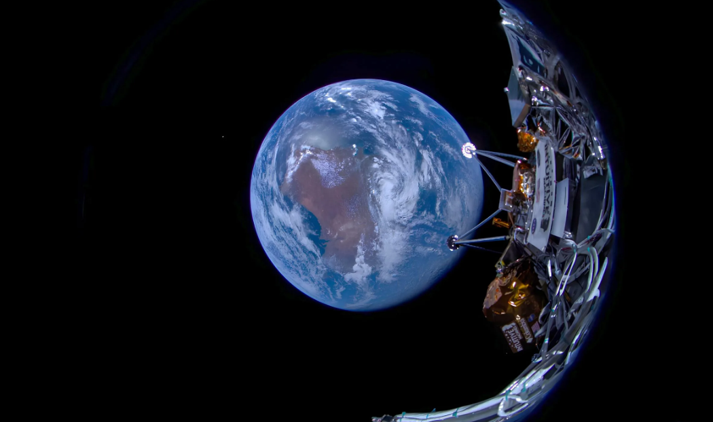
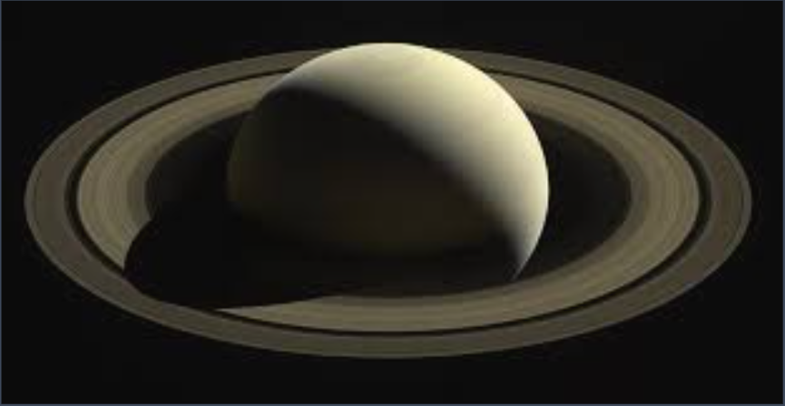
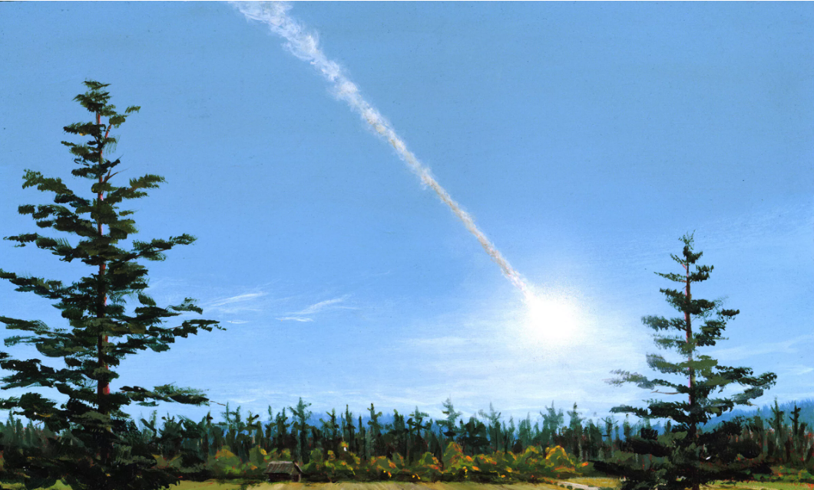
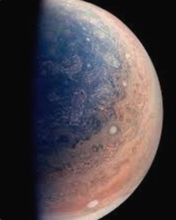

click here to visit 2026's space calender
🌌 Space Calendar
all of 2025's space missions and calenders.
-
January
- January 3: The Quadrantid meteor shower peaks.
- January 16: Mars at opposition
- Sometime this month: Lunar Trailblazer & Nova-C IM-2 lunar mission.
- Sometime this month: Blue Ghost lunar mission with PlanetVac onboard
-
February
- February 16: Venus at greatest brightness
- February 25: Astronauts Butch Wilmore and Sunni Williams return from the International Space Station.
-
March
- March 1: Europa Clipper makes a gravity assist maneuver at Mars.
- March 14: Total lunar eclipse
- March 20: March equinox
- March 29: Partial solar eclipse
- Sometime this month: Hera makes a gravity assist maneuver at Mars.
- Sometime this month: Saturn’s rings “disappear.”
-
April
- April 20: Lucy flies by asteroid 52246 Donald johanson
- April 21: Mercury at greatest elongation
- April 22: The Lyrid meteor shower peaks
-
May
- May 6: The Eta Aquariid meteor shower peaks
- May 31: Venus at greatest elongation
- Sometime this month: Tianwen-2 launches to a comet and a quasi-moon of Earth.
-
June
- June 21: June solstice
- June 30: Asteroid Day.
-
July
- July 31: The Southern Delta Aquariid meteor shower peaks
-
August
- August 12: The Perseid meteor shower peaks
- August 31: Juice makes a gravity assist maneuver at Venus.
-
September
- September 7: Total lunar eclipse.
- September 21: Partial solar eclipse
- September 21: Saturn at opposition
- September 22: September equinox
- September 23: Neptune at opposition
- Sometime this month: End of Juno’s extended mission.
-
November
- November 17: The Leonid meteor shower peaks.
- November 21: Uranus at opposition
- Sometime this month: Saturn’s rings “disappear"
-
December
- December 1: New Moon
- December 14: The Geminid meteor shower peaks
- December 21: December solstice
- December 22: The Ursid meteor shower peaks
The Moon will be a slightly illuminated crescent and should not interfere much with the display.
Mars will be at its brightest and most visible of the entire year, making this the best time to try to see the red planet.
Lunar Trailblazer & Nova-C IM-2 lunar mission. Private company Intuitive Machines’ IM-2 mission, which is part of NASA’s Commercial Lunar Payload Services (CLPS) initiative, will launch on a SpaceX Falcon 9 and aim to land on the Moon. The mission will carry several NASA payloads, including the agency’s Lunar Trailblazer orbiter.
In another CLPS mission, private company Firefly Aerospace will attempt to land on the Moon. Its Blue Ghost lander will carry Lunar PlanetVac, a sampling instrument that The Planetary Society helped develop, among its payloads. The mission will launch on a SpaceX Falcon 9 rocket.

Odysseus Leaves Earth The Odysseus lunar lander on its way to the Moon shortly after separating from a SpaceX Falcon 9 booster. Built by private company Intuitive Machines, Odysseus is part of NASA's Commercial Lunar Payload services program.Image: Intuitive Machines
Venus will be at its brightest of the entire year, appearing more than twice as bright as during the planet’s dimmest momentof 2025.
The pair of astronauts will have spent eight more months in space than originally planned, after their ride to the International Space Station (ISS), Boeing’s Starliner spacecraft, displayed several anomalies on its inaugural crewed flight. NASA elected to send Wilmore and Williams back on a SpaceX Crew Dragon capsule, instead. They will be joined on their return trip by astronaut Nick Hague and cosmonaut Aleksandr Gorbunov.
The NASA spacecraft will fly within 950 kilometers (600 miles) of Mars. After that, Europa Clipper’s next gravity assist will be past Earth in 2026, which will then put the mission on its final course to reach Jupiter’s moon Europa in 2030.
This lunar eclipse will be visible in its entirety from almost all of North America, including the contiguous United States and Central America, as well as from most of South America.
The solar eclipse will be best viewed from northeastern Canada, but will also be visible to a lesser extent from most of Europe and parts of North Africa and Russia
The ESA spacecraft will also pass by the Martian moon Deimos and study it with the science instruments onboard. About a year later, in late 2026, Hera will arrive at the asteroid binary Didymos-Dimorphos.
The rings aren’t actually going anywhere, but will be oriented edge-on toward Earth, making them difficult to see.

Cassini's “Grand Finale” Saturn portrait (13 April 2017)In the early hours of 13 April 2017, Cassini captured this breathtaking and unique visage of the Saturnian system as it coasted through space in the shadow of the gas giant.
Using its Wide-Angle Camera (part of the Imaging Science Subsystem), Cassini snapped 96 individual digital photos: these images consisted of Red, Green, and Blue-filtered frames, covering a total of 32 ‘footprints’. These 32 color frames were painstakingly combined to produce the final mosaic. Cassini took nearly four hours to collect these data. In that time, the spacecraft was slowly cruising away from the planet, en route to apoapse (the point farthest from Saturn in any given orbit) of Revolution 269. The distance to the planet increased by 82,000 km in that time, and in the end, the distance to the cloud-tops equaled 650,040 km. Image:
This asteroid is the second of 10 that NASA’s Lucy spacecraft will study as part of its mission. Donaldjohanson (named after one of the discoverers of the Lucy fossil) is located in the main asteroid belt, but the rest of Lucy’s targets are Trojan asteroids located around Jupiter’s orbit.
Mercury will appear farthest from the Sun in the sky than at any other time in the year, making this the best time to see the planet in 2025
The Moon will be only slightly illuminated and should not interfere much with the display
The Moon will be mostly illuminated, which may make it harder to spot this shower.
Venus will appear farthest from the Sun, and so higher in the night sky, than at any other time of the year. This will make for better viewing of Venus, but the planet will not be at its maximum brightness. That is slated for February.
China’s Tianwen-2 spacecraft will launch from a Long March 3B rocket toward 469219 Kamo’oalewa, an asteroid called a “quasi-moon” of Earth because of the way in which it shares our planet’s orbit. Years later — after landing, collecting a sample, and dropping it back toward Earth — the mission will continue on to study comet 311P/PANSTARRS.
As the anniversary of the Tunguska Event, Asteroid Day is the United Nations-sanctioned day of public awareness around planetary defense and the risks that asteroids pose to Earth.

The View from Kirensk On the morning of June 30, 1908, a large meteorite roughly 100 meters (330 feet) wide exploded above Tunguska, Siberia, leveling 2,000 square kilometers (770 square miles) of forest. No known pictures of the event exist, but Russian scientists collected eyewitness accounts from people up to hundreds of kilometers away. William Hartmann, a planetary scientist and prolific space artist, used these reports to paint reenactments of the event from different distances and perspectives. Here, a schoolteacher in Kirensk 400 kilometers (250 miles) southeast of ground zero shields her eyes, watching the meteorite just seconds before it exploded.
The Moon will be only slightly illuminated, so it should not interfere much with views of this shower.
The Moon will be almost full, which could make it much harder to see many of these meteors.
The European Space Agency’s Jupiter Icy Moons Explorer (Juice) spacecraft will pass near Venus to set itself up for two more flybys in the future, both past Earth. These flybys will ultimately send the mission on its way to arrive at the Jupiter system in 2031.
The lunar eclipse will be visible in its entirety from most of Asia, Russia, Australia, and eastern Africa. People in certain regions of the Middle East and central Africa will also be able to see it, but to a lesser extent.
This eclipse will only be visible to those in New Zealand, Antarctica, and the south Pacific Ocean.
Saturn will be at its brightest and most visible of the entire year, so this will be the best time to see it.
Neptune will be at its brightest and most visible of the entire year. It will still be relatively dim and difficult to see, but with the right equipment (like a capable telescope), this will be the best time to try to see it.
NASA’s Juno spacecraft completed its primary mission — orbiting Jupiter 37 times — back in 2018. Since then, Juno has been operating on an extended mission that is set to wrap up in 2025. If the mission is concluded, the spacecraft may be deliberately crashed into Jupiter.

"Half-Jupiter from Juno captured this view of Jupiter during its fifth perijove flyby on March 27, 2017.
The Moon will be a slightly illuminated crescent and should not interfere much with the display.
Uranus will be at its brightest and most visible of the entire year. It will still be relatively dim and so only visible to most naked-eye stargazers under a very dark sky, but easier to spot with binoculars or a telescope.
The rings aren’t actually going anywhere, but will be oriented edge-on toward Earth, making them difficult to see.
The Moon will located on the same side of the Earth as the Sun and will not be visible in the night sky. This phase occurs at 06:22 UTC. This is the best time of the month to observe faint objects such as galaxies and star clusters because there is no moonlight to interfere.
The Moon will be about one-third illuminated, which could partially reduce the visibility of this shower, but there will still be plenty to see.
The Moon will be a barely illuminated crescent and should not affect meteor viewing
🚀space missions
There are also many space missions that are slated to launch sometime in 2025, but which don’t have more exact launch dates released yet. You can possibly look forward to:
- NASA’s SPHEREx and PUNCH missions launching off SpaceX’s Falcon 9 rocket to be placed in Earth orbit.
- The Blue Moon Pathfinder mission launching off Blue Origin’s New Glenn rocket to land on the Moon.
- The Fram2 private space mission launching on a SpaceX Crew Dragon to perform the first crewed spaceflight in a polar orbit.
- The Sierra Space Dream Chaser performing its first test mission to the ISS.
- Axiom Space flying the private Axiom Mission 4 to the ISS using a SpaceX Crew Dragon spacecraft
- Axiom Mission 5 also launching sometime in 2025
- NASA’s EscaPADE mission launching off Blue Origin’s New Glenn rocket to orbit Mars.
- Astrobotic’s Griffin Mission One trying to land on the Moon.
- Intuitive Machines’ IM-3 mission trying to land on the Moon.
- Boeing Starliner-1, the first operational mission of the spacecraft carrying crew, launching to the ISS.
- The Haven-1 private space station launching off SpaceX’s Falcon 9 to Earth orbit.
- ESA’s Space Rider spaceplane performing its first flight.
- SpaceX’s Starship launching additional Integrated Flight Tests, and perhaps also performing an in-orbit propellant transfer demonstration.
click here to visit 2026's space calender